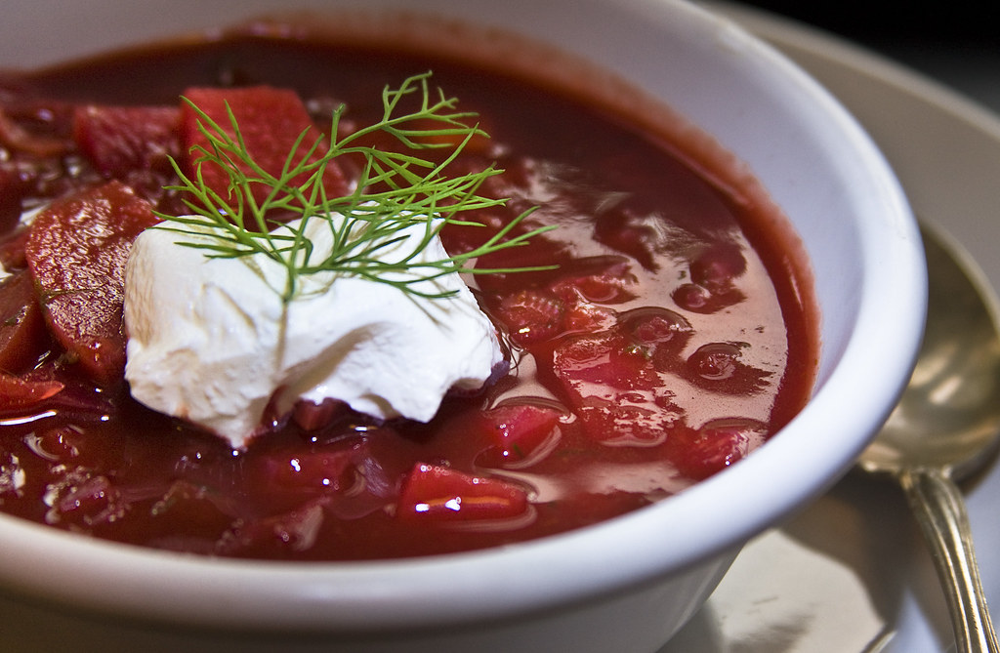

Image Credit
Borscht
Borscht is a hearty beet soup with origins in Ukraine, known for its vibrant color and tangy flavor, often served with sour cream.
Cook time
80 minutes
Calories
250
Instructions
- Peel and grate beets.
- Sauté onions and carrots in a pot until soft.
- Add beets, potatoes, and cabbage to the pot.
- Pour in vegetable broth and bring to a boil.
- Reduce heat and simmer until vegetables are tender.
- Add vinegar, sugar, and salt to taste.
- Stir in chopped dill and cook for an additional 5 minutes.
- Remove from heat and let sit for 30 minutes to allow flavors to meld.
- Serve hot with a dollop of sour cream.
Recipe Credits: Link